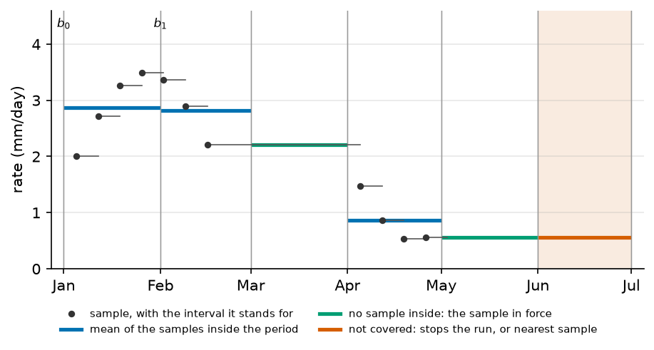

Rain and evaporation: the forcing#
The aquifer model does not see days: it sees stress periods, and one rate per cell for each period. This page gives the rules that turn daily series and daily grids into those rates. How the outputs are put back on the same periods is on Time alignment of outputs and observations. The keys are in [flow.sinks_sources.recharge] and [simulation].
The period, unit, coverage and runoff rules are the same under the three solvers; sections 5 and 7 note where they differ. The daily soil reservoir (The daily soil reservoir) is here one more source of daily grids.
Notation of this page
\(k\) is a stress period, \(n_\mathrm{per}\) the number of periods. \(j\) is one sample of a record, stamped \(t_j\). Rates are volumes per area and per time, so lengths per time. A positive recharge adds water to the aquifer; a positive ETP removes it. Every symbol of the site is on Notation.
Symbol |
Meaning |
Unit |
Set by |
|---|---|---|---|
\(\Delta t\) |
length of a stress period, the stretch of time that gets one forcing value |
s |
|
\(A\) |
catchment area |
m² |
|
\(N\) |
recharge rate, positive into the aquifer |
m/s |
|
\(t_0, t_\mathrm{end}\) |
first and last day of the run, the last day included |
date |
|
\(b_k\) |
edge \(k\) of the stress periods; period \(k\) is \([b_k, b_{k+1})\) and is stamped \(b_{k+1}\) |
date |
derived from |
\(n_\mathrm{per}\) |
number of stress periods of the run |
derived |
|
\(x_j, t_j\) |
sample \(j\) of a forcing record, and its stamp |
mm/day, date |
|
\(\Delta t_r\) |
step of a record: the median spacing of its stamps, the interval the last sample stands for |
s |
derived |
\(\bar x_k\) |
value stress period \(k\) takes from a record |
mm/day, then m/s |
derived |
\(N_k, E_k\) |
recharge and ETP rate of stress period \(k\) |
m/s |
|
\(\hat N\) |
rate a steady stress period takes |
m/s |
|
\(N^+_k, N^-_k\) |
recharge part and deficit part of a net recharge |
m/s |
|
\(Q^\mathrm{ro}_k\) |
catchment runoff of period \(k\), as a volume per time |
m³/s |
|
\(d_\mathrm{ext}\) |
extinction depth of the evapotranspiration, below its surface |
m |
1. The window is cut into periods#
The edges start at \(b_0 = t_0\) and advance by one step \(\Delta t\) until the first edge that reaches the end of the last day:
Period \(k\) is the half-open interval \([b_k, b_{k+1})\). The end date is part of the run, so the last edge is the day after it. A step that does not land on that edge is refused: the window is not aligned with the step.
Edges can also be given explicitly, as window.period_bounds. The code sets them,
and no TOML key does. flow.ic of type steady_state uses this for its
auxiliary steady model: one period that spans the whole window
(5. Steady periods and first_clim).
In the code: build_simulation_time_boundaries.
2. One series per variable#
The data layer hands a variable over as station records or as grids. Two rules reduce them to the shape the flow needs.
Stations. Several stations are averaged at each stamp, with equal weights. A single station is used as it is.
Spatial mode. spatial_mode
decides what stays a series and what stays a grid:
Mode |
Stations |
Grids |
|---|---|---|
|
one series |
kept as a grid |
|
one series |
reduced to one spatial mean per stamp |
|
placed on the cells if they have coordinates, else one series |
kept as a grid |
Under auto, station records with coordinates become a grid only when no series
can be built from them. A grid is not resampled when it is loaded: it is placed
on the cells of the solver mesh once the mesh exists, by the method of
interpolation_method
(nearest, linear or idw). The ETP has the same two keys.
In the code: resolve_forcing.
3. Units#
Every data manager hands rain, ETP, recharge and runoff over in mm/day. The
binders convert them with the fixed factor \(1/(1000 \times 86400)\) m/s per mm/day,
whatever units says. That key is read
for a rate written in the file:
values and a numeric
first_clim are converted from it
to m/s when the flow is built.
A sample is a rate. The code averages samples and never sums them: a monthly total in mm must be turned into mm/day before it is given to the model.
4. A record gets one value per period#
One rule holds for every forcing record: a series, a station, or a grid with a time axis, which is averaged cell by cell of its own grid before it is placed on the mesh.
Samples inside the period. Period \(k\) takes the equal-weight mean of the \(n_k\) samples stamped inside it:
The mean has equal weights, so it is the time mean only for a record with one sample per equal step. Several gridded records that cover one period are averaged the same way, with equal weights.
No sample inside. A sample is the rate of the interval from its stamp to the next stamp. The last sample stands for one step \(\Delta t_r\) of the record, the median spacing of its stamps, and a record of one sample stands for all later time. A period with no sample inside is covered when the interval of the latest earlier sample reaches into it, and takes that sample. So daily data on hourly periods, and a gap inside a record, are covered.
Not covered. A period that no interval reaches, before the first stamp or
after the end of the last step, is not covered.
coverage_policy decides: "error", the
default, stops the run and names the periods; "warn" warns once per record;
"ignore" says nothing. Under the last two, the period takes the nearest sample
in time: the last one after the record, the first one before it.

Fig. 15 A weekly record on six monthly periods, matched by samples_by_period.
Each sample stands for the interval up to the next one, and the last for one
step. March holds no sample and takes the one in force; May is still inside
the last step; June is past it and stops the run by default.#
Four records on monthly periods from 1 January 2000, from calls of
align_forcing_series_to_simulation_window:
The record |
Window |
Under |
The periods take |
|---|---|---|---|
daily, 1 mm/day in January, 3 in February, 5 in March |
January to March |
runs |
1, 3, 5 |
2 on 1 January and 6 on 1 March |
January to March |
runs |
2, 2 (in force), 6 |
one sample, 4 on 1 February |
January to March |
stops: January is before the first stamp |
4, 4, 4 under |
60 daily samples from 1 January, valued 0 to 59 |
January to June |
stops: March to June are after the last step |
15, 45, then 59 four times under |
The last rule. A forcing declared by a CSV file under a well, a lake, a
stream network or a boundary has an aggregate key, for example
flow.sinks_sources.lakes.<name>.rainfall.aggregate. "mean" is the rule
above. "last" reads the record as a state that holds until it changes: period
\(k\) takes the latest sample at or before \(b_k\), and no coverage check applies.
The rain, ETP, recharge and runoff of the data layer have no such key.
In the code: samples_by_period, enforce_coverage.
5. Steady periods and first_clim#
A steady period stands for the long-term state a run starts from. It does not
take the rate of its own dates.
first_clim sets the rate \(\hat N\)
of every steady stress period, and of no other period:
The mean has one weight per period, whatever the length of the period. The
steady periods are every period of a steady run, and period 0 of a transient run
when flow.first_period_steady is true, in the three solvers. A transient
period keeps its own rate, whatever its index. Under MODFLOW-NWT the ETP follows the same rule
with first_clim.
Four periods with rates 2, 4, 9 and 1, from calls of apply_first_clim:
Period 0 |
|
|
the number 7 |
|---|---|---|---|
first period steady |
4 |
2 |
7 |
first period transient |
2 |
2 |
2 |
Periods 1 to 3 keep 4, 9 and 1 in both rows.
A run that starts from a steady state of its own (flow.ic, type
steady_state) builds an auxiliary steady model for that state, with
first_clim set to "mean", or to the prescribed rate. The starting states are
the types of [flow.ic].
In the code: apply_first_clim.
6. Negative recharge goes to the ETP package#
A net recharge can be negative: a series of rain minus ETP, for example. With
negative_to_evt, it is split
into a recharge part and a deficit part:
The recharge package receives \(N^+_k\) and the evapotranspiration package
\(N^-_k\). A transient period keeps its own split. A steady period takes
first_clim on each part: "mean" gives the mean of \(N^+_k\) and the mean of
\(N^-_k\), "first" gives \(N^+_0\) and \(N^-_0\), and a number \(F\) gives \(\max(F, 0)\)
and \(\max(-F, 0)\). So the net rate of a steady period, \(\hat N^+ - \hat N^-\), is
always the one first_clim states: the mean of the net rates, \(N_0\), or \(F\).
A negative number for first_clim needs negative_to_evt, or the file is
refused. With negative_to_evt off, a negative rate in the file is refused when
it is read. The deficit is drawn from the water table near the top of each cell,
down to the extinction depth \(d_\mathrm{ext}\), and not under the sea, a river
head or a lake (Drains and evapotranspiration at the top of the model).
In the code: split_net_recharge.
7. What the solver does with N and E#
The recharge package adds \(N_k\) times the cell area to each cell, and the evapotranspiration package removes at most \(E_k\), less as the head falls to the extinction depth. Both are constant during a stress period. The packages are documented by MODFLOW: RCHA and EVTA in MODFLOW 6 ([Langevin et al., 2017]), RCH and EVT in MODFLOW-2005 and MODFLOW-NWT ([Harbaugh, 2005, Niswonger et al., 2011]). What HydroModPy decides is which rate reaches the ETP package:
MODFLOW-NWT. The loaded ETP drives the package, with the deficit of 6. Negative recharge goes to the ETP package.
MODFLOW 6 without a soil reservoir. The loaded ETP is ignored, with a warning if
"etp"is inflow.active_sinks_sources. Only the deficit reaches the package.MODFLOW 6 with a soil reservoir. The ETP the soil could not meet reaches the package.
Boussinesq.
"etp"inflow.active_sinks_sourcesis refused.
Under MODFLOW 6 the recharge is set to zero on lake cells: the lake gets its own rain through the lake package. The law, the surface and the depth of the ETP package are on Drains and evapotranspiration at the top of the model.
8. Runoff is not recharge#
The runoff of the data layer, data.runoff, never enters the aquifer as a
diffuse term. It enters the model, when it enters at all, as a volume per time:
where \(\bar q^\mathrm{ro}_k\) is the catchment mean of the runoff, in m/s, put on the periods by the rule of 4. A record gets one value per period, and \(A\) the catchment area.
With an active stream network, \(Q^\mathrm{ro}_k\) is shared among the reaches by their length and routed downstream. A forcing written in the file wins over the loaded series, and a lake then gets no direct share, so the same water is not counted twice (Streams and the water mover).
Without a network, a declared lake receives \(Q^\mathrm{ro}_k\) directly (Lakes and reservoirs).
Without either, the runoff stays outside the flow.
A lake also gets the catchment mean of the loaded rain and ETP as open-water rates, unless it declares its own.
When a calibration compares a simulated drain budget with a gauge, the runoff is added to the simulated discharge, averaged on each period and multiplied by the catchment area, or by the area the gauge drains (Time alignment of outputs and observations). If a stream network already carries the runoff, nothing is added.
9. The soil reservoir as a source of grids#
With a soil reservoir (flow.sinks_sources.recharge.soil), the data layer
loads rain and ETP, and the reservoir computes three daily grids in mm/day:
recharge, the ETP it could not meet, and runoff. The binders take them where they
would take a loaded recharge, ETP and runoff, so they go through the rules of
4. A record gets one value per period and 8. Runoff is not recharge. A daily step gives one slice per period; a monthly step
gives the mean of the daily slices of the month.
A soil run refuses a steady first period, since that period would hold the
recharge of one day only. A soil run therefore has no steady period, and
first_clim acts on none of its periods. The daily rules are on
The daily soil reservoir.
Assumptions and limits#
Constant within the period. Rain, ETP and runoff are one value per period and per cell. Recharge is a flux set from outside and does not read the water table.
"mean"weights each period equally. On periods of unequal length, the steady rate is not the time mean of the record.The ETP is not read under MODFLOW 6 outside soil mode. A loaded ETP is ignored, with a warning.
Aggregation by
lastexists for declared forcings only. The data layer always takes the mean.
Parameters of this page#
The step of example 04, then the first period of its soil run:
simulation.time.step_value in project.tomlsimulation.time.step_value Forcing/stress-period time-step scalar or inline token '<value> <unit>' (for example '30 day'). form integer or number or string default "1 month" current "1 month" set by project.toml:26
flow.first_period_steady in step6_soil_reservoir.tomlflow.first_period_steady For transient flow, mark the first solver stress period as steady-state. form true | false default true current False set by step6_soil_reservoir.toml:65
Checked by#
The tests that import the code of this page. The box is generated: a new test appears here on the next build.
65 test files import hydromodpy.physics.forcing, hydromodpy.physics.forcing.steady_periods, hydromodpy.physics.flow.time_forcing, hydromodpy.physics.flow.structure_binders, hydromodpy.core.time, hydromodpy.core.time.coverage, hydromodpy.solver.modflow_common.recharge_evt_routing, hydromodpy.solver.modflow6.builders.recharge. Their names say what they check.
validation: 1
integration: 3
- Modflow6 lake piecewise forcing.
- Shared recharge equivalence.
- The soil recharge reaches modflow6 cell by cell.
unit: 61
- A network state is read at its date. calibration
- A trial tells the solver when its recharge is its own. calibration
- Persist trial series. calibration
- The protocol s block route matches the single metric one. calibration
- The sandbox removes the recharge its trial wrote. calibration
- Two trials scored discharge differs by curve number. calibration
- Two trials scored discharge differs by impervious runoff. calibration
- Two trials scored discharge differs by runoff lag. calibration
- Flow barrier config. config
- Flow lake config. config
- Period aggregation. core
- Step value spec shared rule. core
- The soil storages are states at the stamp. core
- Time selection. core
- Climatic recharge bridge. data_managers
- Synthetic recharge stamps. data_managers
- Launcher time window. launchers
- Structure updaters. launchers
- One coverage rule for every forcing record. mesh/cartesian_grid/field_discretization
- A soil run does not open on a one period steady state. physics
- Cutoff wall helpers. physics
- Flow barrier binder. physics
- Flow contract helpers. physics
- Flow time forcing. physics
- Forcing validation. physics
- Lake flux forcing binder. physics
- Sfr runoff binder. physics
- A redraw is not a recharge move. results
- A run resolves a date to its period. results
- A state is read at its stamp. results
- Time alignment. results
- Capacity classes recharge more than their mean. simulation
- One capacity class gives the uniform soil. simulation
- The raster spreads the declared ru. simulation
- The ru ladder recharge falls as the capacity grows. simulation
- The soil columns map back to their cells. simulation
- The soil forcings are one grid per quantity. simulation
- The soil reads its forcing without touching it. simulation
- The soil refuses forcings it cannot pair. simulation
- The soil that cannot settle stops the run. simulation
- Forcing recharge payload. solver/modflow_nwt
- A calibration trial value reaches the soil evt package. solver
- A trial that moves the recharge writes it inside its own folder. solver
- First clim is one rule for every solver. solver
- Flow barrier resolver. solver
- Modflow6 reads the etp only when the soil sent it. solver
- Modflow6 steady recharge evt. solver
- Modflow6 ts6 time series. solver
- Recharge stack is released. solver
- Solver time units. solver
- Steady initialization time. solver
- The atelier etp still draws no evt under modflow6. solver
- The recharge files keep their name and bytes. solver
- The soil evt rate goes to binary files. solver
- The soil evt rate is zero on inactive lake and constant head cells. solver
- The soil evt surface follows the drain elevation. solver
- A soil run refuses a one period steady start at run time. workflow
- A soil run refuses a spinup shorter than a year at run time. workflow
- Sfr network binding. workflow
- The binder sends the soil recharge etp and runoff. workflow
- The soil budget is printed once by the data step. workflow
In the code#
What |
Where |
|---|---|
Window and edges |
|
Station mean, spatial mode |
|
The coverage rule, for every record |
|
Series to periods |
|
Grids to periods |
|
Units, the binders, runoff and lake forcing |
|
Steady periods and the split of a negative recharge |
|
The recharge and ETP packages |
|
See also#
Time alignment of outputs and observations: how outputs and observations are put on the periods.
The daily soil reservoir: the daily balance that turns rain and ETP into recharge.
How water leaves the aquifer: how water leaves the aquifer.
[flow.sinks_sources.recharge]: choose where the recharge comes from.
[flow.ic]: the starting state.